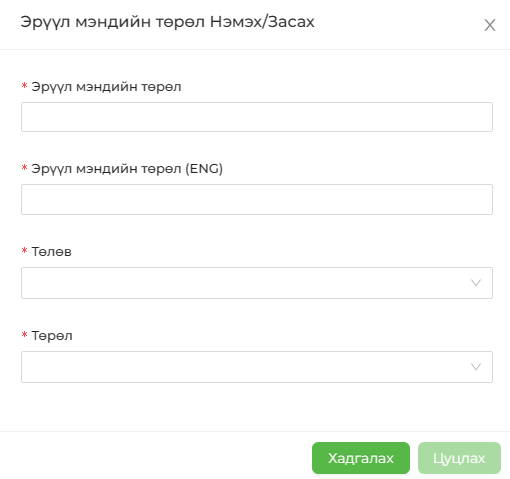

Байгууллагаас ажилчдад зориулан явагддаг эрүүл мэндийн үйл ажиллагааг бүртгэнэ. Шинээр бүртгэл үүсгэхдээ ШИНЭ ТӨРӨЛ НЭМЭХ товчийг даран гарч ирэх цонхны мэдээллийг бүрэн бүртгэсний дараа ХАДГАЛАХ товчийг даран мэдээллийг хадгална.
